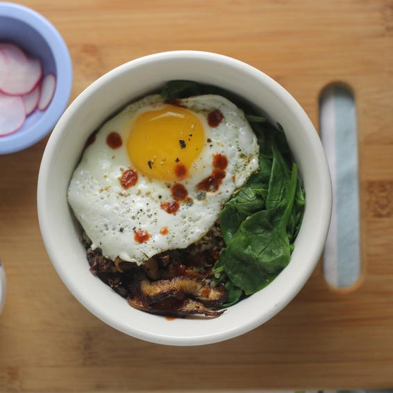

Easy Egg Recipe

Quinoa Bowl With Shitake "Bacon"
Prep time
20mins
cook time
20 mins
Total time
40 mins
SERVES: 2
Ingredients
5 oz shiitake mushrooms, sliced
1/2 c quinoa, thoroughly rinsed and drained
2 c baby spinach, lightly packed
2 lg eggs
Sriracha
Directions:
PREHEAT oven to 400°F. PLACE mushrooms on a foil-lined baking sheet. Drizzle with olive oil and season generously with salt and pepper. Bake, stirring once or twice, until mushrooms are crispy, about 25 minutes. PLACE quinoa in a small skillet over medium-high heat. Cook, stirring constantly, until quinoa pops and smells fragrant, about 5 minutes. Add 1 cup water and a generous pinch of salt; bring to a boil over high heat, cover, and reduce heat to low. Cook until quinoa is tender, about 20 minutes. REMOVE quinoa from heat, add spinach, and let stand, covered, for 3 minutes, until spinach is wilted. WARM 2 tsp olive oil over medium heat in a medium nonstick skillet. Crack in eggs, sprinkle with salt and pepper, and cook until whites are set but yolks are still runny, about 3 minutes. SPOON quinoa and spinach into 2 bowls, top with mushrooms, and slide fried eggs on top. Drizzle with sriracha and serve.
Serve Hot. Enjoy!
NUTRITION
(per serving) 320 cal, 14 g pro, 35 g carb, 6 g fiber, 4 g sugars, 14 g fat, 3 g sat fat, 700 mg sodium